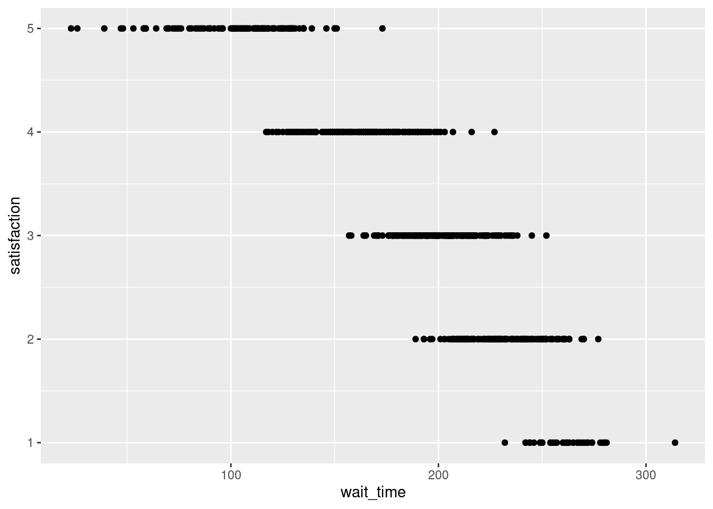

Data types: Show that you understand what is available to you in R. Note also, this goal overlaps with part of the midterm project. See the appendix on Data Types in the textbook for help. Write notes and R code chunks to demonstrate your knowledge
# type of numeric datatypeof(10)
[1] "double"
typeof(10.0)
[1] "double"
typeof(10L)
[1] "integer"
# if you want to know if something is numeric (a double or an integer), you can use the function is.numeric() and it will tell you if it is numeric (TRUE) or not (FALSE).is.numeric(10L)
[1] TRUE
is.numeric(10.0)
[1] TRUE
is.numeric("Text")
[1] FALSE
# Characters (also called “strings”) are any text between quotation marks.typeof("This is a character string")
[1] "character"
typeof('You can use double or single quotes')
[1] "character"
# This can include quotes, but you have to escape quotes using a backslash to signal that the quote isn’t meant to be the end of the string.my_string <-"The instructor said, \"R is cool,\" and the class agreed."# cat() prints the argumentscat(my_string)
The instructor said, "R is cool," and the class agreed.
# Logical data (also sometimes called “Boolean” values) is one of two values: true or false. In R, we always write them in uppercase: TRUE and FALSE.class(TRUE)
[1] "logical"
class(FALSE)
[1] "logical"
# assign 1 to the object named aa <-1class(a)
[1] "numeric"
typeof(a)
[1] "double"
# make a vector with a thing in ita_thing <-1another_thing <-c(1,2)many_things <-c(1:10)# these are all now objects in the environment
Tidy Data: Show that you understand what this means. Give an example of data this is in tidy format, and data that is not.
# load ggplot2 and some sample datasetslibrary(tidyverse)
# the starwars data is loaded by tidyverse#assign the starwars dataset to a variable (object) namestarwars_copy<- starwars# check out some of the data typeshead(starwars_copy)
# A tibble: 6 × 14
name height mass hair_…¹ skin_…² eye_c…³ birth…⁴ sex gender homew…⁵
<chr> <int> <dbl> <chr> <chr> <chr> <dbl> <chr> <chr> <chr>
1 Luke Skywal… 172 77 blond fair blue 19 male mascu… Tatooi…
2 C-3PO 167 75 <NA> gold yellow 112 none mascu… Tatooi…
3 R2-D2 96 32 <NA> white,… red 33 none mascu… Naboo
4 Darth Vader 202 136 none white yellow 41.9 male mascu… Tatooi…
5 Leia Organa 150 49 brown light brown 19 fema… femin… Aldera…
6 Owen Lars 178 120 brown,… light blue 52 male mascu… Tatooi…
# … with 4 more variables: species <chr>, films <list>, vehicles <list>,
# starships <list>, and abbreviated variable names ¹hair_color, ²skin_color,
# ³eye_color, ⁴birth_year, ⁵homeworld
ggplot2: We will continue learning about this across the semester. Show at a minimum that you can make a graph and add it to your blog. Try examples from the textbook. Show that you understand the layer concept. Identify aspects that are confusing to you so we can discuss them in class
# make a data frame (table)my_df <-data.frame(a =1:5, b =c("one","two","three","four","five"), random =runif(5,0,1))# access columns and rows with $ and []my_df$a
# load some sample datasurvey_data <-read_csv("https://psyteachr.github.io/ads-v2/data/survey_data.csv")
Rows: 707 Columns: 7
── Column specification ────────────────────────────────────────────────────────
Delimiter: ","
chr (3): caller_id, employee_id, issue_category
dbl (3): wait_time, call_time, satisfaction
dttm (1): call_start
ℹ Use `spec()` to retrieve the full column specification for this data.
ℹ Specify the column types or set `show_col_types = FALSE` to quiet this message.
library(ggplot2)ggplot() # blank canvas
ggplot(data = survey_data, mapping =aes(x = wait_time, y = satisfaction)) # data to pull from and assigning axis
# ggplot(survey_data, aes(x = wait_time, y = satisfaction)) shortened version of the same thingggplot(survey_data, aes(x = wait_time, y = satisfaction)) +# the plus sign signals more info/layersgeom_point() # scatter plot

ggplot(survey_data, aes(x = wait_time, y = satisfaction)) +geom_point(color="black", size=1) +geom_point(color="#afa0e8", size=0.5) +# use color name or hex numbergeom_smooth() +geom_smooth(method ="lm") # lm stands for linear model
`geom_smooth()` using method = 'loess' and formula = 'y ~ x'
`geom_smooth()` using formula = 'y ~ x'